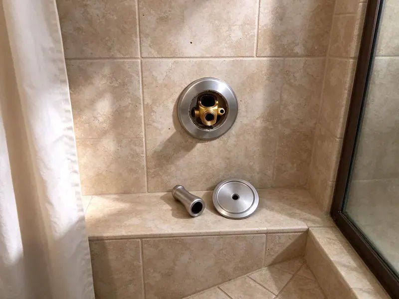

Urinal Installation in Clovis, NM
For reliable urinal installation in Clovis, NM, GVK Plumbing provides expert plumbing services for both commercial and residential properties.
- Skilled licensed plumbers
- Upfront pricing
- Quick, reliable service
- Waterless Urinal Options

Get Your Urinal Installed Right and On Schedule in Clovis, NM.
Call us to plan your urinal install around your business hours.
Commercial and Residential Urinal Installation in Clovis, NM
GVK Plumbing offers complete urinal installation services for businesses and homes across Clovis, NM. Whether you are upgrading an old unit, renovating a commercial restroom, or adding a new fixture, our skilled plumbers deliver a proper, leak-free setup.
Our expertise includes:
- ADA-compliant installations
- Set wall carriers and blocking for wall-hung urinals
- Rough in 2-inch waste lines with proper venting

Additional Bathroom Plumbing Services in Clovis, NM
From toilets to showers, our bathroom plumbing team in Clovis, NM repairs, installs, and replaces every fixture with clean, code-compliant work.


Customers
Why Choose GVK Plumbing for Urinal Installation in Clovis, NM?
Incorrect urinal installation can lead to leaks, clogs, and expensive repairs down the line, which is why GVK Plumbing emphasizes precision and quality in every job we undertake.
- Code Compliance, We make sure all urinal installations meet New Mexico plumbing codes for safety and function.
- Cleanliness, Proper installation prevents common issues like splashing and odor, keeping a hygienic environment.
- Durability, We use quality materials and secure mounting techniques for long-lasting, sturdy installations.
Citywide Coverage
Our team covers all of Clovis for new installs, replacements and tenant improvements. We coordinate with general contractors and landlords to stay on your timeline.
Experienced Team
Our team handles everything from a single home urinal to multi-fixture restrooms for restaurants and schools. Experience with carriers and flushometers keeps installs clean and efficient.
Safety-First Approach
From proper ventilation to secure waste line connections, GVK Plumbing puts first safety in all urinal installations. Our process guarantees that your new fixture is installed correctly, reducing risks of leaks or structural issues.
Trusted Certified Clovis Plumbing Services Professionals
At GVK Plumbing, we take pride in providing licensed, certified plumbing services throughout Clovis, NM. Backed by recognized industry credentials, our experienced plumbers combine technical skill with genuine customer care. Whether it is repair, installation, or maintenance, we follow strict safety and quality standards to deliver long-lasting results you can trust.
Call Us Now PHCC Plumbing Contractor Recognition
PHCC Plumbing Contractor Recognition Better Business Bureau (BBB) Accreditation
Better Business Bureau (BBB) Accreditation Angi Certified Pro
Angi Certified Pro ISO 9001 Quality Management Certification
ISO 9001 Quality Management CertificationProfessional Urinal Installation Services in Clovis, NM
Sensor Urinal Installation in Clovis, NM
Touchless sensor flush valves improve hygiene and reduce wasted flushes. We install battery or hardwired sensor valves and set the detection range for each fixture. Hardwired units may need an electrician for the power supply, which we can coordinate. Sensor valves are common in schools, gyms and healthcare offices.

ADA Urinal Installation in Clovis
Accessible urinals must have the rim no higher than 17 inches above the floor and enough clear floor space in front. We set the carrier and fixture to meet these rules and place the flush control within reach. This is essential for public restrooms and new construction. We review the layout before setting the fixture.
Flushometer Urinal Installation in Clovis
Manual flushometer urinals are the standard in many commercial restrooms. We install Sloan Royal or Zurn flush valves with the correct gallons-per-flush rating, typically 0.125 to 0.5 gpf. Each valve includes a vacuum breaker and stop. We adjust the flush to clear the bowl without wasting water.
Sloan Urinal System Installation in Clovis, NM
Sloan is a leading brand in commercial plumbing, known for its durable and reliable urinal flushometers and fixtures. GVK Plumbing specializes in Sloan urinal system installation in Clovis, NM. Our plumbers are familiar with Sloan's specific requirements, including sensor-activated flush valves and complex water supply connections. We ensure that your Sloan system is installed correctly for strong performance and a long service life, which is important in high-traffic environments.
Urinal Replacement and Upgrades in Clovis, NM
Older urinals often use 1 gallon or more per flush and have cracked or stained bowls. We remove the old fixture, inspect the waste outlet and carrier, and install a modern low-flow model. Sometimes the old carrier can be reused, which reduces cost. Upgrading also improves restroom appearance and odor control.
Commercial Urinal Installation in Clovis
GVK Plumbing provides dedicated urinal installation for commercial properties, including offices, restaurants, and public facilities. We understand the need for durable, high-traffic solutions and can install a variety of models, from standard flush to waterless urinals. Our team keeps disruption to your business operations to a minimum during the installation process, focusing on efficiency and compliance with commercial building codes.
Residential Urinal Installation in Clovis, NM
While less common, some homeowners in Clovis, NM opt for urinal installations in their residences, particularly in basement bathrooms or dedicated utility spaces. GVK Plumbing can help with selecting appropriate residential-grade urinals and completing a clean, functional installation. We consider factors like space, existing plumbing lines, and ventilation to fit the urinal cleanly into your home's system.

Urinal Installation Cost Factors in Clovis, NM
Costs depend on the fixture type, whether a carrier is needed, and how far the drain and supply must run. Sensor valves cost more than manual valves, and waterless urinals have higher upfront prices but save water over time. Replacements using existing lines are the least expensive. We provide a line-item quote that shows each cost.
Trusted Urinal Installation Near Me in Clovis, NM
When you search for 'urinal installation near me' in Clovis, NM, GVK Plumbing is your reliable local choice. We focus on rapid response times and efficient service to address your plumbing needs quickly, minimizing inconvenience.
When you search for 'urinal installation near me' in Clovis, NM, GVK Plumbing is your reliable local partner. Our team is conveniently located to provide prompt and efficient service throughout the entire Clovis area. We understand the urgency of commercial plumbing needs and aim to respond quickly.
GVK Plumbing at a Glance
- Licensed and insured plumbers serving Clovis, NM
- Same-day appointments and 24/7 emergency response
- Upfront, flat-rate pricing before work begins
- 4.8-star rated by 320+ New Mexico customers
Clovis Map
Clovis Information
- Population
- 37,612
- Area codes
- Local
- Service area
- Clovis and communities within 40 miles
- Nearby
- Portales, Lovington, Roswell, Hobbs
Water conservation matters for every business, so efficient urinal installation helps Clovis, NM businesses lower water bills while meeting commercial restroom codes.
Expert Services
Trust our professionals for reliable GVK Plumbing solutions in Clovis, NM.
Our Specialized Plumbing Services in Clovis, NM
At GVK Plumbing, we provide a complete range of plumbing services across Clovis, NM. From leak detection to full system installations, our team ensures fast, precise, and affordable service for both residential and commercial properties. Explore our core services below:


How Our Urinal Installation Process Works in Clovis, NM
We plan each urinal install around your restroom layout and schedule.
Request a Quote
Start by calling (505) 581-4975 or filling out our online form to discuss your urinal installation needs. We'll gather details about your project and schedule a good time for an assessment.
On-Site Assessment
A GVK Plumbing plumber will visit your Clovis property to evaluate the installation site, assess existing plumbing, and confirm the best approach. We'll provide a detailed, transparent quote.
Professional Installation
Our experienced technicians will proceed with the urinal installation, ensuring all water lines, drain connections, and mounting hardware are correctly installed and tested. We prioritize cleanliness and efficiency.
Frequently Asked Questions About Urinal Installation in Clovis
Replacing a urinal on existing lines usually costs $500 to $1,200 including a manual flush valve. New installs with carriers and new drain lines usually range from $1,500 to $3,500, and sensor valves add $250 to $600.
Constant running, cracked porcelain, persistent odor, leaks at the wall and slow drains all point to a fixture or valve that needs attention.
Regular cleaning with appropriate cleaners is essential for both flush and waterless urinals. Waterless urinals also require regular replacement of their sealant cartridges, typically every 1 to 3 months depending on usage. Proper maintenance prevents odors and clogs and keeps the fixture sanitary.
While new urinal installations are usually scheduled, we understand that commercial needs can sometimes be urgent, especially during renovations. Contact us at (505) 581-4975 to discuss your timeline; we'll do our best to accommodate urgent requests for businesses in Clovis.
Yes, it is possible to install a urinal in a home in Clovis, though it's less common than in commercial settings. Considerations include available space, existing plumbing, and ventilation. Our plumbers can assess your home to determine whether it will work and recommend suitable residential models.
New urinals and restroom changes generally require a plumbing permit. Simple like-for-like replacements usually do not, and we will confirm with your local building department.
Most standard urinal installations or replacements can be completed within 2 to 4 hours. However, if new plumbing lines need to be run, or if there are significant structural modifications required, the process could take a full day or more.
Flush urinals use a water flush to remove waste, while waterless urinals use a specialized trap system with a sealant liquid to prevent odors without water. Waterless urinals offer major water savings but require specific maintenance for their sealant cartridges. Both types offer effective waste removal.
What People Are Saying About Our Plumbing Experts?

Sofia M.
Two new toilets installed in one visit, no mess left behind, and the tech even adjusted a faucet he noticed was dripping. Fair pricing and really friendly.
Toilet Installation · Portales, NM
James P.
Our commercial plumbing system had a leak under the sink, and GVK Plumbing handled it professionally. The plumbers arrived quickly and restored everything without disruption to our customers.
Commercial Plumbing · Portales, NMLaura S.
I scheduled a water heater replacement, and the team made the process smooth and affordable. The new unit works perfectly, and they cleaned up after completing the job.
Water Heater Replacement · Portales, NM
Daniel K.
A pipe burst at 11 pm and they actually answered. The plumber showed up within the hour, shut everything down, and had us back to normal the next morning. Could not ask for more.
Emergency Plumbing · Las Vegas, NM
Patricia H.
We had a slab leak that two other companies could not find. GVK Plumbing located it in under an hour, explained our options, and the price matched the quote to the dollar.
Slab Leak Repair · Roswell, NM
Mark T.
When our office needed drain cleaning, GVK Plumbing provided quick, reliable service. The plumber arrived on time and made sure every drain flowed perfectly before leaving. Very satisfied.
Drain Cleaning · Artesia, NM